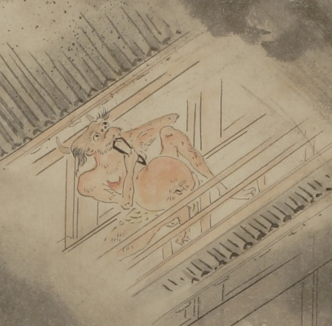

赤い鬼。頭に2本角が生えている。頭頂部は禿げ、側頭部から髪が生えている。顎ひげが生えている。裸体で、全身に毛が生え、腹部は丸く膨らんでいる。建物の2階の縁側で壁にもたれて座り、右手に大きな毛抜きを持ち、ひげを抜こうとしている。
著作者：幽花堂／出典：親書誌：U426_nichibunken_0060：鳥羽絵巻；トバエマキ／日付：2007／資源識別子：U426_nichibunken_0060_0002_0000
Copyright (c)2010- International Research Center for Japanese Studies, Kyoto, Japan. All rights reserved.